Portfolio project · v0.6.0
Ask your documents.
Privately.
A fully local assistant that answers questions from your own files, cites every source, and says so when the answer isn't there.
When does the company close for the year-end holiday?
The company closes for the year-end holiday from December 22, 2026 through January 2, 2027. [1]
[1] 05-holiday-announcement.pdf · page 1
The problem
The answers are in the documents. Nobody wants to read them all.
A small business keeps its knowledge in folders: an HR handbook, a supplier contract, a price sheet, meeting notes. Staff ask the same questions every week.
A cloud chatbot means uploading private files to someone else's servers. And a general chatbot invents answers when it doesn't know.
What this app promises
- Nothing leaves the machine. Models run locally in Ollama.
- Answers only from your files, with numbered citations you can check.
- "Not found in the documents" instead of a guess.
- Usable without training: plain words, guidance, and a troubleshooter.
What it does
Six things, end to end
Organises new files
Drop a folder. Each file gets a suggested shelf and tags. You decide, then confirm.
Grounded answers
Hybrid search finds the right passages; the model may only use those.
Checkable citations
Click [1] to read the exact passage, with file, page and score.
Versions and trash
Duplicates are skipped, changed files become v2, deletes can be restored.
Settings without jargon
Tooltips, presets and warnings for values that would hurt answers.
Self-diagnosis
A troubleshooter names the cause and fix, and can draft a support ticket.
Walkthrough · 1 of 6 · Add documents
Pick files or a whole folder
Drag and drop, Choose files, or Choose folder (subfolders included). Files that can't be read are greyed out with the reason before anything is sent.
Then Analyze: the app reads each file, compares it with the shelves you already have, and picks tags. A progress bar shows each step.
Nothing is added to the library yet. The files wait in a staging area until you confirm, and are deleted if you cancel.
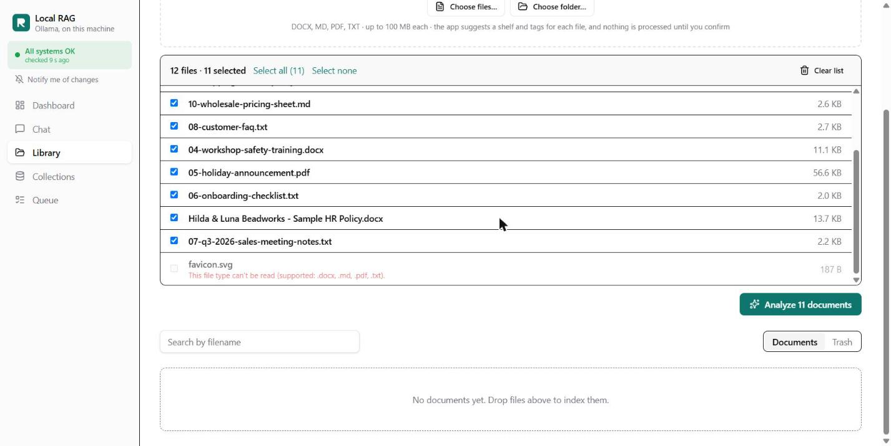
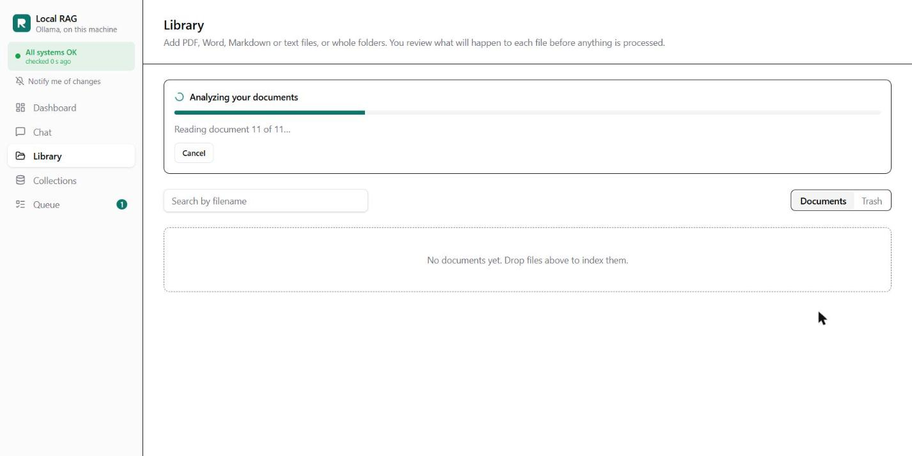
Walkthrough · 2 of 6 · Review suggestions
The app suggests. You decide.
- Each file gets a shelf: an existing one when it's similar to documents there, or a new shelf with a suggested name.
- Tags come from the content: department, kind of document, validity like q4-2026, and the folder.
- A reason for every suggestion: "Grouped with 02-supplier-agreement.docx", or for an existing shelf "Similar to 09-shipping-returns-policy.md on business".
- Rename shelves (here to business and staff), move files, edit tags, or leave a file out. Then one button: Create 2 shelves and process 11 documents.

Walkthrough · 3 of 6 · Processing
Indexed in the background, visible at every step
Each file becomes a job in a queue: parsed (PDF, Word with tables, OCR for scans), cut into overlapping pieces, embedded and indexed twice, for meaning and for exact words.
The Library shows live progress. The Queue names each job by its file and explains anything skipped, such as "Already in the library as … on shelf …".
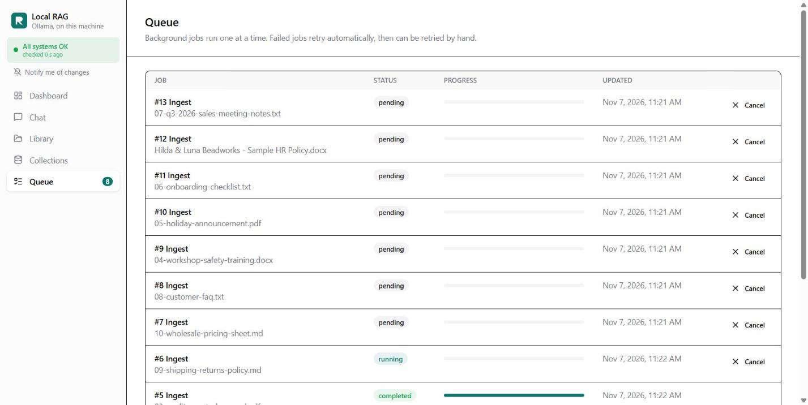
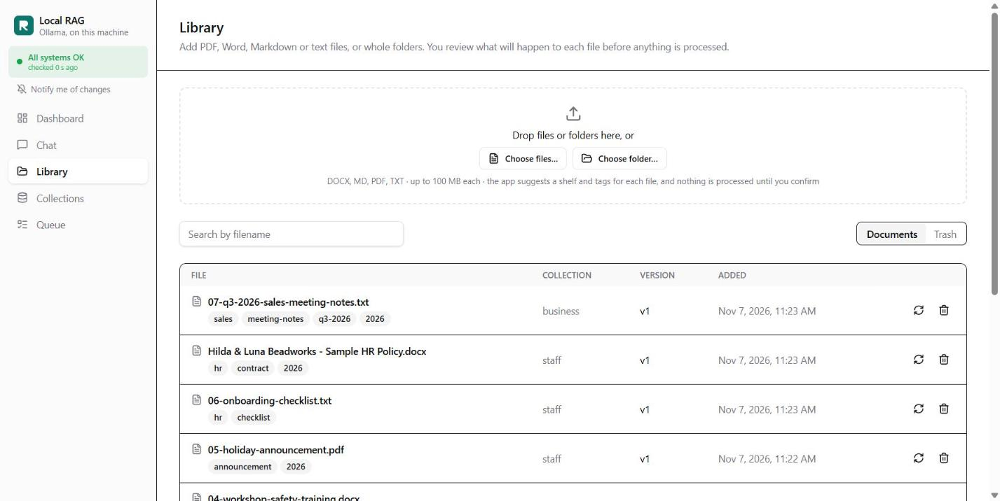
Walkthrough · 4 of 6 · Ask
Answers with numbered sources
Pick a shelf and ask. The answer streams in with citations [1] [2], and the sources are listed underneath with file, page and score.
A citation check runs on every answer. If the model forgot to cite, or cited a number that doesn't exist, the answer is marked so you know to verify it.
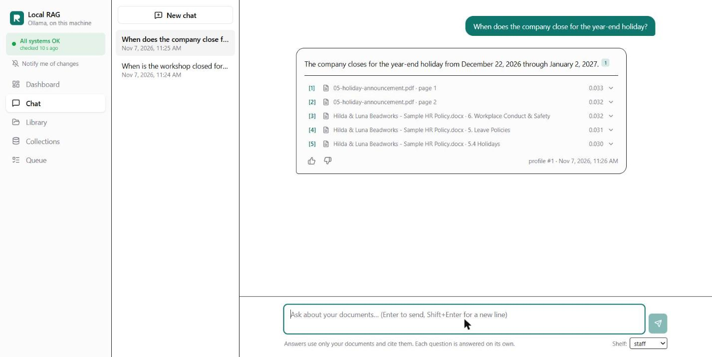
Walkthrough · 5 of 6 · Check
Every claim can be checked in one click
Clicking a citation opens the exact passage the model was given: the text, the file, the page or section, and the version it came from.
Answers are reproducible: each one stores the retrieval settings, passages and scores it used, so an old answer can be explained even after documents change.
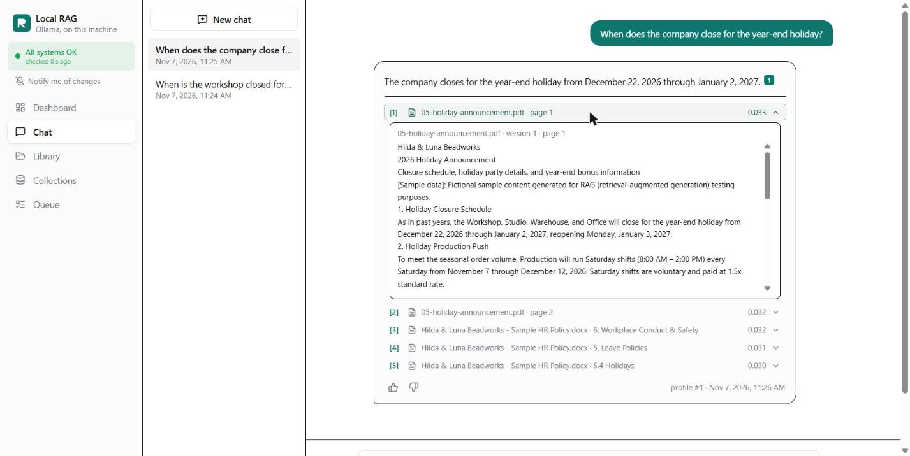
Walkthrough · 6 of 6 · No guessing
"Not found in the documents" is a feature
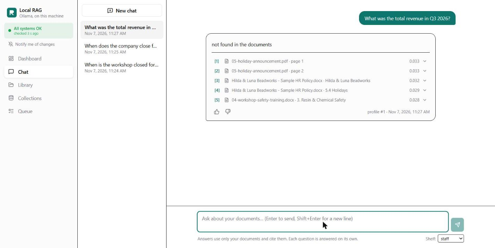
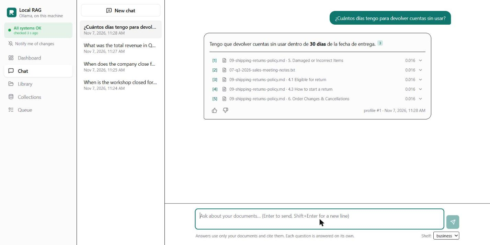
Safety
Nothing is stored twice, and nothing is lost by accident
- Files are stored once under their SHA-256 hash. The same content again is recognised and skipped.
- The same name with new content becomes v2. The old version stays, and rollback is instant: it flips a pointer and never re-embeds.
- Deletes go to a 30-day trash with Restore. Every upload, delete, rollback and settings change is in the audit log.
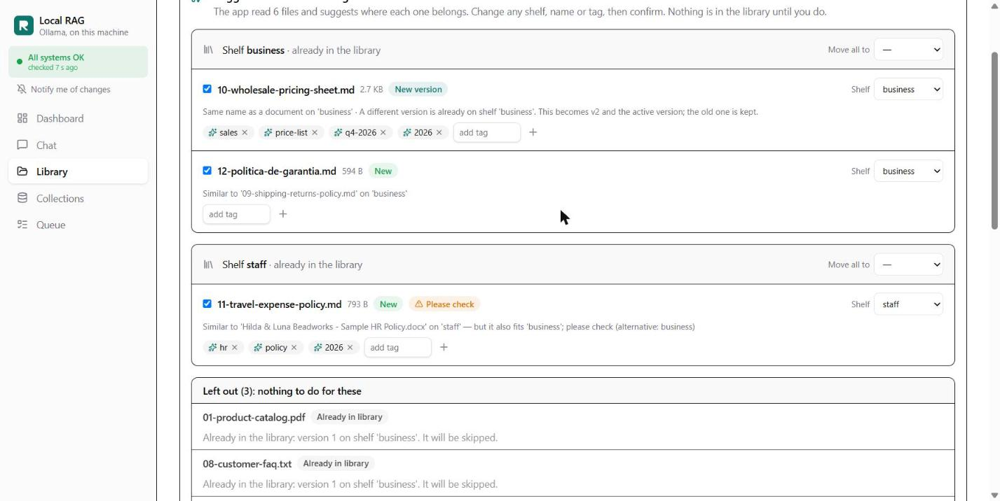
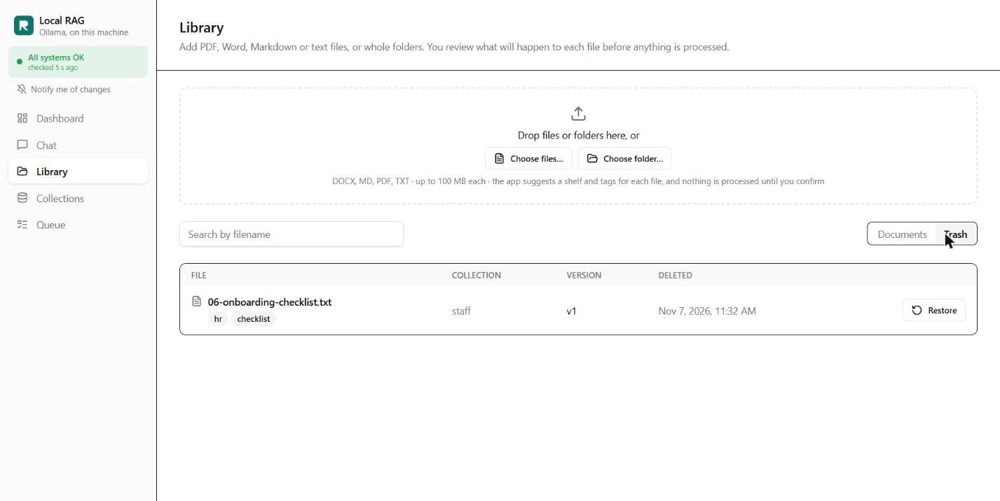
Settings
Expert settings, explained for everyone
Each shelf has its own embedding model and chunking. Tooltips say what they mean; presets fill in values that work (Short facts, Balanced, Long text); unusual values get a plain warning, and values that would break the shelf are blocked.
Changing a setting rebuilds the shelf blue/green: a new copy is built in the background and swapped in when ready. The old copy keeps answering meanwhile.
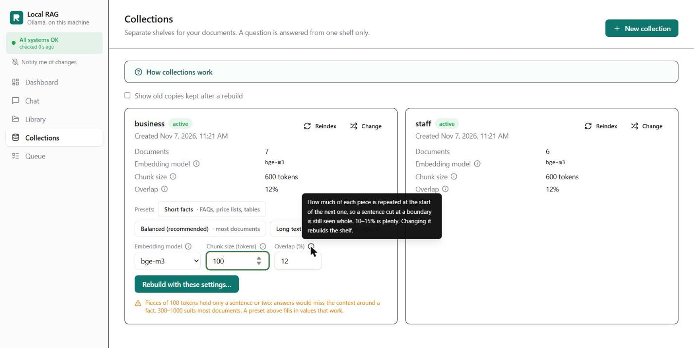
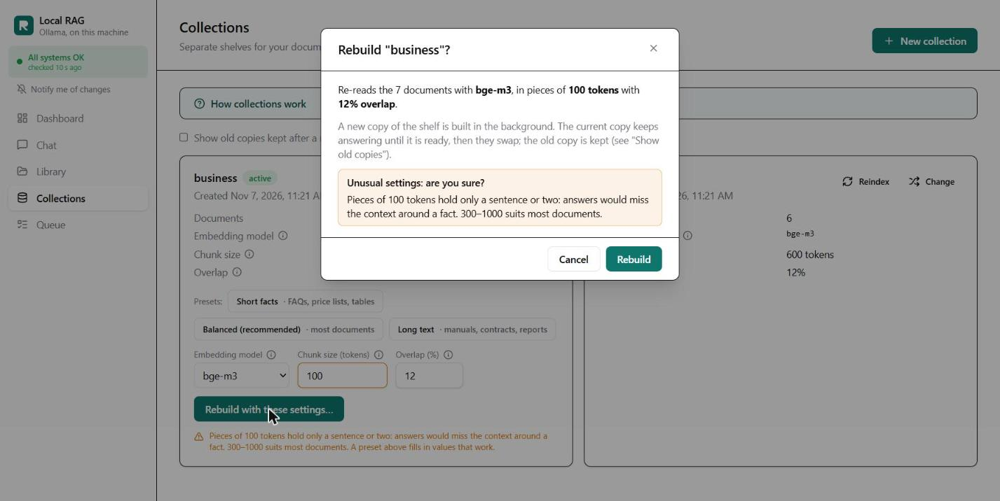
Operations
When something breaks, the app says what and how to fix it
A status bar on every page, and controls that can't work are paused with the reason. The troubleshooter checks Ollama, the database, the search index and the background worker, with a cause, a fix and action buttons.
One click drafts a support ticket in service-desk format: environment, failed checks, impact, urgency and priority, plus the user's own notes. In this demo it is saved locally and never sent.
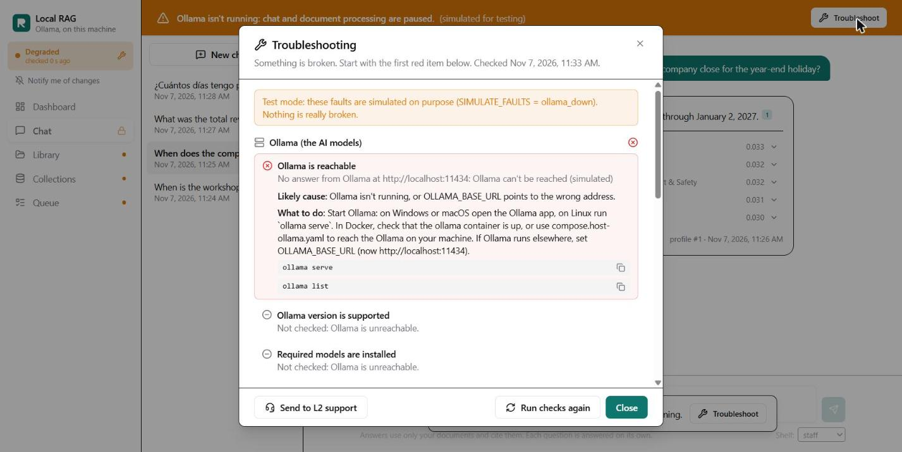
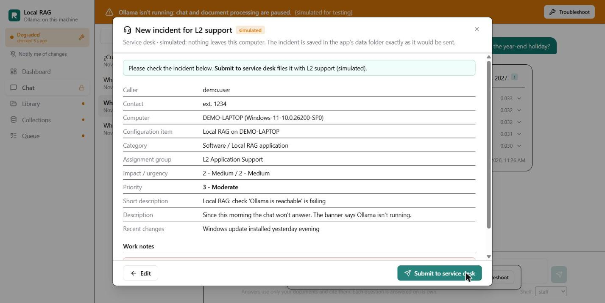
Try it · Demo company
A fictional company to try it on


Try it · Employee assistant
Luna answers employees from every shared shelf
Employees ask Luna in a chat bubble or full screen, in Spanish or English. Luna searches every shelf the admin marks "Visible in the employee portal", with the same rules: only the documents, numbered citations, and "not found" instead of a guess.
Shelves can use different embedding models, so they are never compared by raw score: shelves that share a model are ranked together, keyword search runs once over all of them, and the lists are fused by rank.
The path for a reviewer: website → Employee login → intranet → Open the RAG admin console.

How it works
Architecture
A question, step by step
- Search the chosen shelf two ways: by meaning (Chroma) and by exact words (SQLite FTS5).
- Fuse both rankings with reciprocal rank fusion.
- Send the top 5 passages to the local model with a prompt that allows only those, with citations.
- Stream the answer; store passages and scores; check the citations.
Teal: the path of a question.
Engineering
Decisions that keep it correct
- One service layer. Every write to SQLite, Chroma and the file store goes through it; routes never write directly.
- One embedding model per shelf. Vectors from different models are never mixed; a change means a blue/green rebuild.
- Interfaces with fakes for the LLM, embeddings and vector store, so CI never needs a model.
- Container-ready: config from environment variables, all state under one data folder, structured JSON logs with request ids, a /health endpoint.
Measured, then written down
| Question | Measured | Record |
|---|---|---|
| How to make a 3B model cite? | one-line hint 6/6 vs long reminder 2/6 | 0007 |
| How to group new files into shelves? | department tags 11/11 vs clustering 5–19/30 | 0009 |
| Which chat model fits 7.2 GB RAM? | qwen2.5:3b; an 8B model swapped to disk and gave no answer in 5 min | 0004 |
Quality
Tested with fakes in CI, and end to end with the real model
The end-to-end kit drives the same API as the UI with 11 fictional business documents in English and Spanish and about 60 questions. It checks ingestion of every file type, answers against expected facts, citations, refusals, versions and rollback, trash and restore, cancel and retry, rebuilds, suggested shelves, prompt injection, and recovery after a restart.
Every failure is classified as a retrieval miss, an answer miss or an app error, and each run gets a written report. The first run, graded by a reviewer, found citations right only 64% of the time; a measured prompt fix and a citation check raised that to 81%. The four answer misses in the latest run (v0.6.0, 2026-11-09) are all the small model leaving out a fact it was given.
CI: ruff, pytest, the frontend build and a Docker build on every push.
How it was built
Built with an AI coding assistant, directed and tested by me
I built this with Claude Code. I set the requirements and made the product calls: "suggest a shelf, but let me decide", "few broad shelves", "never lose data". I tried every step in the browser, reviewed the changes and the test reports, and sent back what didn't work.
Claude Code wrote most of the code, proposed options and measured them. Every deviation from the plan is a short decision record in the repository.
Stack
Python 3 · FastAPI · SQLAlchemy · Alembic · SQLite FTS5 · ChromaDB · PyMuPDF · python-docx · Tesseract · Ollama (bge-m3, qwen2.5) · React · TypeScript · Vite · Tailwind · TanStack Query · Docker · GitHub Actions
Code, decisions and test reports: github.com/carlosgild-web/local-rag-ollama